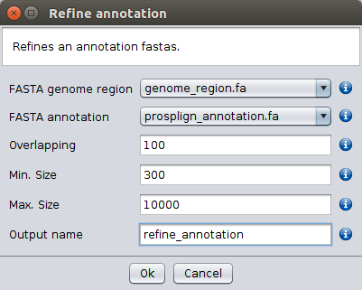

Refine Annotation
Depending on the number and location of the differences found between
the reference CDS and the target sequences, the Splign-Compart (NCBI)
and the ProSplign-Compart (NCBI) options do not always provide a
complete CDS annotation. Nevertheless, if all exon-intron splice junctions
are covered in the partial CDS annotation it may be possible to obtain a
complete CDS annotation by combining the results produced by the
Splign-Compart (NCBI) and the ProSplign-Compart (NCBI)
options and information on putative open reading frames generated by
the getorf application. When using the Refine Annotation
option the user must provide the name of the FASTA file
generated by the Splign-Compart (NCBI) or the
ProSplign-Compart (NCBI) options, as well as a FASTA
file with approximate genome region where the gene is located (for
instance the file with the Fasta extension that is saved by the
ProSplign-Compart (NCBI) option in the /Export Files/nucleotides folder,
located in the specified repository folder. Moreover, it must specify
the size of the region used to determine if there is an overlap, as
well as the minimum and maximum size of the open reading frames to be
reported by the getorf application.
The Refine Annotation option will automatically perform the following
steps:
- Get all open reading frames (between STOP codons) for the provided genome
region (only the plus strand is considered thus it is important to give the
genome sequence in the proper orientation) and sort them by
sequence size (from the longest to the shortest).
- For each sequence in the partial CDS annotation file: extract the last n
positions of the sequence and try to find a match in the open reading frames obtained
in (1); only the first match is considered; if a match is found add the piece
of sequence found after the hit to the sequence from where the motif
used for the search originates from.
- For all sequences obtained in (2): compare each possible pair of sequences
in order to extract the first n positions of the first sequence and try to find
a match in the second sequence; if a match is found erase the sequence region
from the hit to the end of the target sequence and concatenate the two sequences.
- Repeat step (3) until there is no possibility of merging two sequences.
- Get all open reading frames (between a START and a STOP codon) for
the provided genome region and sort them by size (from the longest to the shortest).
- For each sequence obtained in (4): extract the first n positions of the
sequence and try to find a match in the open reading frames obtained
in (5); only the first match is
considered; if a hit is found, erase the sequence of the open reading frame showing
the hit from the place where the motif is found until the end and prefix the first
sequence being processed with the sequence just obtained.
- For all sequences obtained in (6): compare each possible pair of sequences
in order to extract the first n positions of the first sequence and try to find
a match in the second sequence; if a match is found erase the sequence region
from the hit to the end of the target sequence and concatenate the two sequences.
- Repeat step (7) until there is no possibility of merging two sequences.

Refine annotation